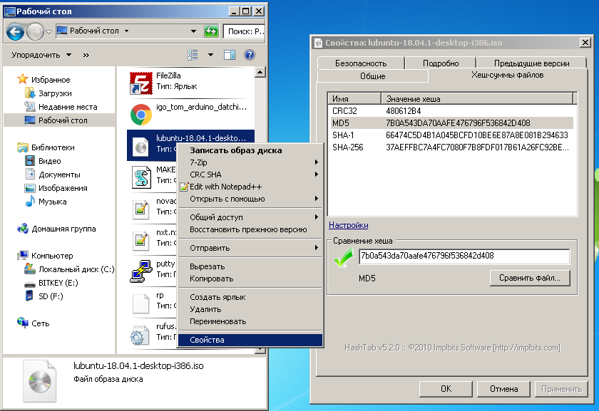

Проверка целостности дистрибутива Lubuntu Linux Live USB(CD/DVD) в Windows
После того как вы загрузили ISO-файл для создания Lubuntu Live USB(CD/DVD) , рекомендуется проверить, что файл является правильным и безопасным для использования. Расчет MD5 дает контрольную сумму (называемую хеш-значением), которая должна равняться значению MD5 правильного файла образа системы ISO. Хеши MD5 предназначены для проверки целостности данных с использованием алгоритма MD5 128-битного криптографического хеша и могут подтвердить целостность и достоверность файла.
И так чтобы убедиться, что мы скачали безопасный файл образ ОС нам понадобиться вычислить хеш MD5 ISO и сверить его с хеш MD5 из файла MD5SUMS который мы возьмем с официального сайта релизов Lubuntu здесь.
ОС Windows не поставляется с утилитой вычисления md5. Поэтому нам придется загрузить утилиту для вычисления md5.
Hashtab в Windows
1.Загрузите и установите Hashtab , бесплатную программу проверки хэша с открытым исходным кодом.
2.Щелкните правой кнопкой мыши по iso файлу Lubuntu Live USB(CD/DVD) который мы скачали.
3.Нажмите Свойства, затем откройте вкладку Хеш-суммы файлов.
4. Подождите, пока Hashtab вычислит контрольную сумму - хеш MD5 (это может занять значительное количество времени в зависимости от производительности вашего компьютера).
5.Скопируйте соответствующий хеш из UbuntuHashes в поле сравнение хеша.
6.Дождитесь сравнения .
.
7.Слева от поля сравнение хеша появится красная галочка если хеши не равны - значит файл скопирован с ошибками либо поврежден, такой файл использовать нельзя. Зеленая галачка говорит о том, что хеши равны . Следовательно файл образ Lubuntu Live USB(CD/DVD) не поврежден и безопасен, можно приступать к записи его на USB или DVD носитель.
Защитите вашу конфиденциальность при использовании криптовалют.
Защитите Ваши интернет платежи с помощью Linux Live CD(USB).
Создание Lubuntu Linux Live CD в Windows.
Создание Lubuntu Linux Live USB в Windows.
Проверка целостности дистрибутива Lubuntu Linux Live USB(CD/DVD) в Windows.
Проверка целостности дистрибутива Lubuntu Linux Live USB(CD/DVD) после записи на USB(CD/DVD).
Home Nagrania Projects |

|